quant-engine — Architecture
A deterministic, deployment-agnostic quant engine: two decoupled pipelines
(training → sealed vintage, and runtime) sharing one domain
vocabulary, plus an authenticated admin UI (qe-server + React SPA) that triggers and
supervises the training-side CLI jobs. All state is paper/offline — no live order submission.
.drawio files under diagrams/
open in diagrams.net and are the source of truth; the embedded .svg files are their
exports. Native draw.io export tooling was unavailable, so diagrams were authored as valid mxGraph
XML with matching hand-rendered SVGs from one shared spec.1Architecture Summary
A Rust Cargo workspace of 20 internal crates plus a Vite + React 19 +
TypeScript admin SPA. Deterministic work runs as CLI jobs (qe-cli); a small
axum server (qe-server) wraps those jobs behind an authenticated HTTP API
and hosts the SPA.
| Area | Detected technology | Evidence | Confidence |
|---|---|---|---|
| Language (engine) | Rust 2021, edition pinned 1.96 | Cargo.toml, rust-toolchain.toml | High |
| Workspace | Cargo workspace, crates/* (20) | Cargo.toml | High |
| CLI | qe-cli (binary qe): train / backtest / ingest | crates/cli/src/main.rs | High |
| Web/API server | axum 0.8 + tokio (multi-thread) | crates/server/src/lib.rs | High |
| Static hosting | tower-http ServeDir/ServeFile | crates/server/src/lib.rs | High |
| Frontend | React 19 + TS 5.7, Vite 6 | web/package.json, web/vite.config.ts | High |
| Frontend state/routing | React hooks only — no router/redux/zustand | web/src/app/App.tsx; web/package.json | High |
| Persistence | Embedded LMDB (heed 0.20) | crates/storage/src/store.rs | High |
| Artefact store | Content-addressed vintage JSON | crates/vintage/src/lib.rs | High |
| Run store | File-based meta/index/result JSON | crates/server/src/runs/store.rs | High |
| Authentication | Google OAuth + email allowlist + HMAC session cookie | crates/server/src/auth/mod.rs | High |
| Deployment | Multi-stage Dockerfile, 12-factor env | Dockerfile, config.example.toml | High |
| CI | GitHub Actions: ci.yml (Rust), frontend.yml (web) | .github/workflows/* | High |
| Observability | tracing structured logs; /api/health | crates/telemetry/src/lib.rs | High |
| Live venue integration | Behind default-off http feature; not on server path | crates/venue, crates/cli/src/main.rs | High |
| Background queue / cron | Not detected — bounded worker pool instead | crates/server/src/runs/manager.rs | High |
2System Context
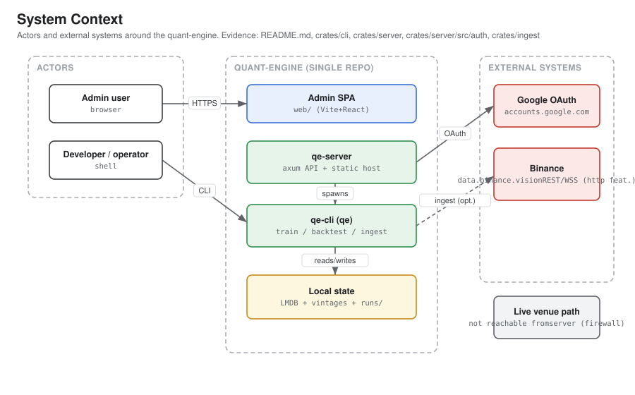
- Admin user — signs in through the browser SPA (Google OAuth, allowlisted email) to trigger, monitor, and review runs.
- Developer / operator — runs the
qebinary directly (train / backtest / ingest). - Google OAuth — identity for the admin UI (
crates/server/src/auth/mod.rs). - Binance (
data.binance.vision; REST/WSS) — ingestion & venue connectivity, both behind the default-offhttpfeature. The committed sample store lets backtests run fully offline.
The live venue/trading path is not reachable from the server — the QE-132 firewall forbids qe-server from linking qe-runtime/qe-venue (§14).
3High-Level Application Architecture
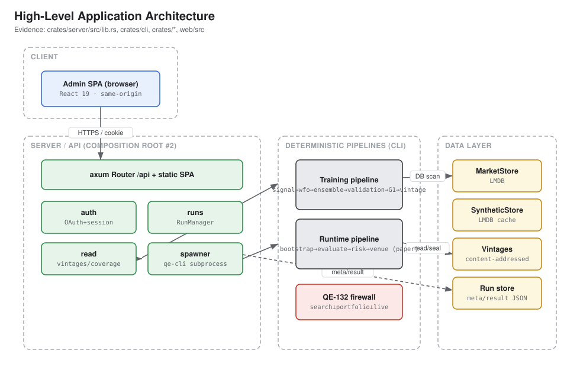
qe-cli— the deterministic pipeline as three jobs, each emitting JSON-line progress on stdout.qe-server— an axum server that serves the SPA at/, exposes/api, and spawnsqe-clisubprocesses. Async lives only here.
The data layer is local and file/LMDB-based: MarketStore + SyntheticStore (LMDB), content-addressed vintages, and a file-based run store. The QE-132 firewall enforces a three-way search ⟂ portfolio ⟂ live separation (§14).
4Repository and Module Structure
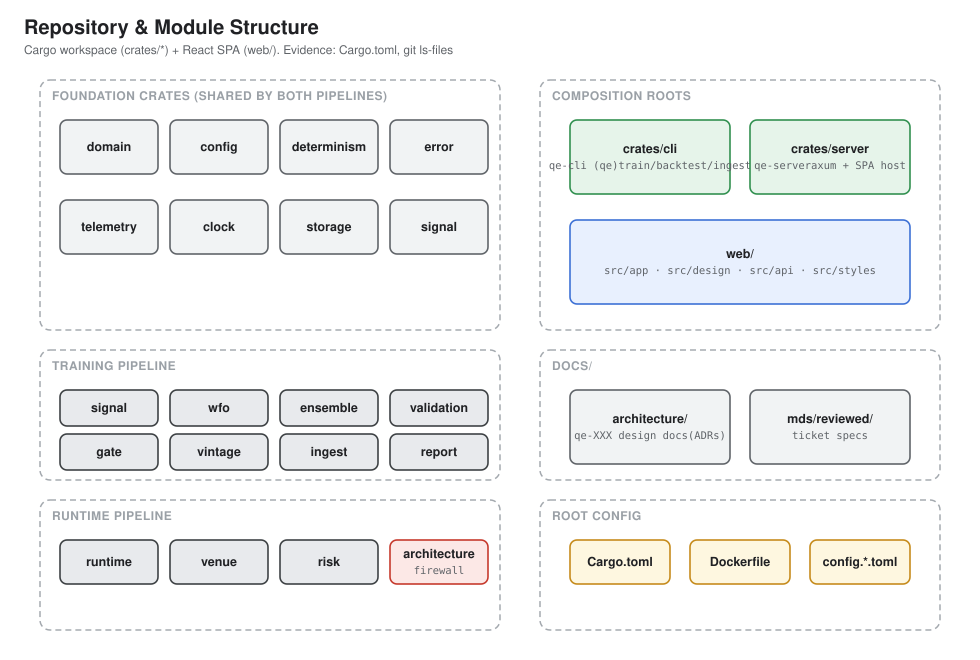
| Path | Responsibility | Important files |
|---|---|---|
crates/domain | Shared vocabulary (instruments, time, money, bars) | src/{money,bar,instrument,time}.rs |
crates/config | Typed layered config (TOML → profile → QE_ env) | src/{schema,universe}.rs |
crates/determinism | RNG, reproduction harness, lineage | src/{rng,harness,lineage}.rs |
crates/error / telemetry / clock | Error taxonomy + hot-path lint; tracing; clock-skew guard | src/lib.rs, skew.rs |
crates/storage | Embedded LMDB market + synthetic stores | src/{store,synthetic,key}.rs |
crates/signal | Indicators, features, genome (train+runtime shared) | src/{genome,feature,indicator/*}.rs |
crates/wfo | Walk-forward / MAP-Elites search (search side) | src/{mapelites,fitness,cv,friction}.rs |
crates/ensemble | Discrete-DE ensemble, stress, capacity (portfolio side) | src/{de,objective,stress,capacity}.rs |
crates/validation / gate | DSR/PBO/SPA suite; G1 holdout-embargo gate | src/{dsr,pbo,spa}.rs |
crates/vintage / report | Sealed artefact format; validation evidence pack | src/lib.rs |
crates/ingest | Binance bulk-history download + fusion | src/{downloader,fuse,integrity}.rs |
crates/runtime / venue / risk | Live/paper evaluation; venue adapters; risk/kill contract | src/{evaluator,rest,limit,kill}.rs |
crates/architecture | Executable firewall/decoupling guard (CI) | tests/firewall.rs |
crates/cli | Composition root #1: qe binary | src/main.rs, src/jobs/* |
crates/server | Composition root #2: admin API + SPA host | src/{lib,main}.rs, {auth,runs,read} |
web/ | React admin SPA (build → web/dist) | src/{app,design,api,styles} |
docs/architecture | Design ADRs (qe-XXX-*.md) + this package | qe-001…qe-268 |
5Frontend Architecture
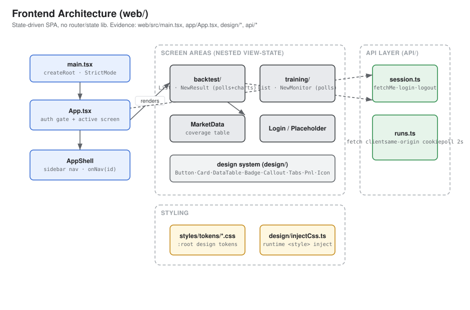
Navigation is a two-level useState machine (no react-router, redux, zustand, or createContext anywhere in web/src).
- Entry —
main.tsxmounts<App/>inStrictMode; imports fonts +global.css.index.htmlsetsdata-theme="dark". - Shell / nav —
app/App.tsxholds authstatus(fromfetchMe()) +activescreen;design/AppShell.tsxrenders the sidebar and callsonNav(id). A one-shot deep-link pushes a sealed vintage from the training monitor into the New-backtest flow. - Screens —
backtest/(List, New, Result),training/(List, New, Monitor), plus MarketData, Login, Placeholder (Strategies). - Design system —
design/index.tsexports Button, Card, Badge, Callout, Input, Select, DataTable, Tag, Pnl, Tabs, Icon, AppShell. Styling via:rootCSS design tokens (styles/tokens/*.css) + a runtimeinjectCss()for jsdom parity. - API layer —
api/session.ts+api/runs.ts(typedfetch,credentials: 'same-origin'). Monitor screens pollGET /api/runs/:idevery 2 s with bounded retry (MAX_POLL_FAILURES = 4), stopping on a terminal status.
6Backend / API Architecture
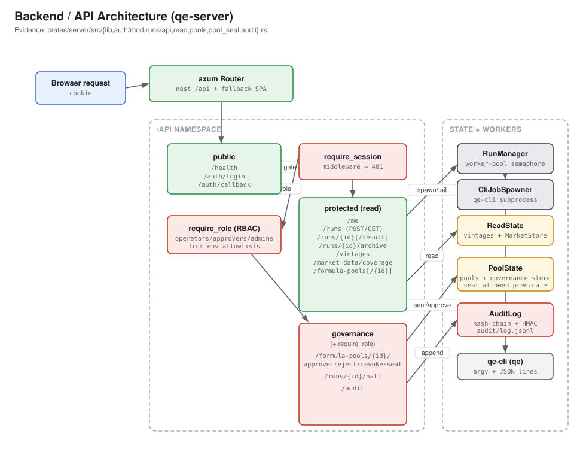
/api with a session-gated protected subtree + static SPA fallback.05-backend-api-architecture.drawiobuild_router (crates/server/src/lib.rs) carries a shared AppState { manager, auth, read }; handlers extract sub-state via FromRef. Blocking work runs in spawn_blocking.
| Method | Route | Handler / source | Auth | Service | Notes |
|---|---|---|---|---|---|
| GET | /api/health | health — lib.rs | No | — | {"status":"ok"} |
| GET | /api/auth/login | login — auth/mod.rs | No | AuthContext | 302 → Google, CSRF state |
| GET | /api/auth/callback | callback — auth/mod.rs | No | AuthContext | Verify token, set session |
| GET | /api/me | me — auth/mod.rs | Yes | — | {email} |
| POST | /api/runs | create_run — runs/api.rs | Yes | RunManager | 201 {id} / 400 |
| GET | /api/runs | list_runs — runs/api.rs | Yes | RunManager | Newest-first |
| GET | /api/runs/{id} | get_run — runs/api.rs | Yes | RunManager | RunMeta / 404 |
| GET | /api/runs/{id}/result | get_result — runs/api.rs | Yes | RunManager | result.json / 409 |
| GET | /api/vintages | list_vintages — read.rs | Yes | ReadState | Hash-verified list |
| GET | /api/market-data/coverage | market_data_coverage — read.rs | Yes | ReadState | LMDB coverage rows |
7Authentication and Authorization
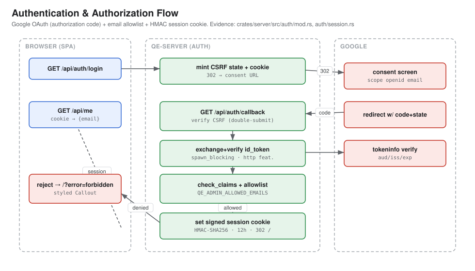
GET /api/auth/login— mint a CSRFstate, set a short-lived cookie, 302 to Google (scope=openid email).GET /api/auth/callback— verifystate(double-submit), then exchange + verify the ID token via the injectableIdTokenVerifierinspawn_blocking.check_claims— enforceaud, Googleiss, unexpiredexp,email_verified.- Allowlist (
QE_ADMIN_ALLOWED_EMAILS, fail-closed); non-allowlisted logins redirect to/?error=forbidden. mint_session_cookiesigns{email, exp}(12 h) asHttpOnly; Secure; SameSite=Lax;require_sessionverifies it on every protected route.
QE_SESSION_SECRET falls back to a random ephemeral secret (sessions don't survive a restart) — the server still boots, fail-closed.8Core Runtime Request Flow
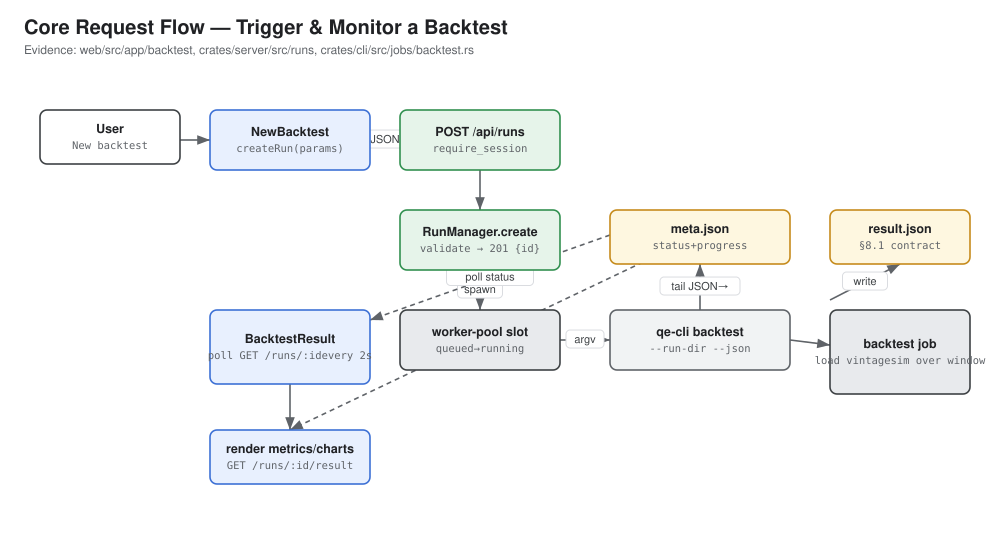
NewBacktestcallscreateRun(params)→POST /api/runs(session-gated).RunManager::createvalidates, writes initialmeta.json, returns201 {id}.- Worker pool:
queued → running;CliJobSpawnerrunsqe-cli backtest … --run-dir --json(piped,kill_on_drop). - Supervisor tails JSON-line progress, atomically updates
meta.json; child writesresult.json. BacktestResultpolls every 2 s; onsucceededfetches the result once and renders metrics, inline-SVG charts, heatmap, trades.
9Data Model
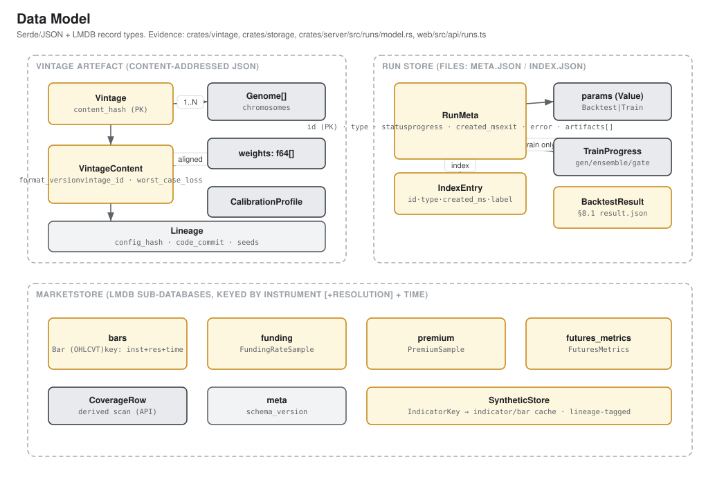
- Vintage artefact (
crates/vintage/src/lib.rs) —Vintage { content, content_hash };VintageContent { format_version=2, vintage_id, chromosomes: Vec<Genome>, weights: Vec<f64> (aligned 1:1), calibration, worst_case_loss?, lineage }. Content-hash = SHA-256 over canonical JSON. - Run store (
crates/server/src/runs/model.rs) —RunMeta { id, type, status, params, progress, train?, created_ms, …, exit?, error?, artifacts[] };IndexEntry(immutable discovery fields);result.json=BacktestResult. - LMDB
MarketStore(crates/storage/src/store.rs) — sub-DBsbars → Bar,funding → FundingRateSample,premium → PremiumSample,futures_metrics → FuturesMetrics, keyed by instrument (+resolution) + time.CoverageRowderived by scan.SyntheticStore= lineage-tagged indicator/bar cache.
10Environment Configuration Matrix
Placeholders only — no real secrets are read or shown. Engine config: config.toml (every key overridable by a QE_-prefixed, __-nested env var). Server/auth knobs come from env directly.
| Variable | Purpose | Required | Evidence |
|---|---|---|---|
QE_DETERMINISM__SEED | Master RNG seed | optional | config.example.toml |
QE_STORAGE__MARKET_DIR / __SYNTHETIC_DIR / __ARTIFACTS_DIR | LMDB + artefact dirs | optional (defaults) | crates/config/src/schema.rs |
QE_CODE_COMMIT | Code provenance in vintage id | optional | crates/cli/src/main.rs |
QE_SERVER_ADDR | Bind address (default 127.0.0.1:8080) | optional | crates/server/src/lib.rs |
QE_SERVER_STATIC_DIR | Built SPA dir served at / | optional (needed for SPA) | crates/server/src/lib.rs |
QE_SERVER_DATA_DIR | State dir (holds runs/) | optional | crates/server/src/lib.rs |
QE_SERVER_MAX_CONCURRENCY | Max concurrent run subprocesses (default 2) | optional | crates/server/src/lib.rs |
QE_SERVER_ARTIFACTS_DIR / QE_SERVER_MARKET_DIR | Read-API vintage / market dirs | optional | crates/server/src/lib.rs |
QE_SERVER_CLI_BIN | Path to qe binary to spawn | optional | crates/server/src/runs/spawn.rs |
QE_GOOGLE_CLIENT_ID (+ QE_OAUTH_* alias) | OAuth client id (= token aud) | required for login | crates/server/src/auth/mod.rs |
QE_GOOGLE_CLIENT_SECRET | OAuth client secret — secret, omitted | required for login | crates/server/src/auth/mod.rs |
QE_GOOGLE_REDIRECT_URI | Registered callback URI | required for login | crates/server/src/auth/mod.rs |
QE_SESSION_SECRET | HMAC session key — secret, omitted (random fallback) | recommended (prod) | crates/server/src/auth/mod.rs |
QE_ADMIN_ALLOWED_EMAILS | Comma-separated allowlist (fail-closed) | required | crates/server/src/auth/mod.rs |
Per-environment separation (staging/production configs or deploy manifests) is not detected in repository.
11Deployment and Infrastructure
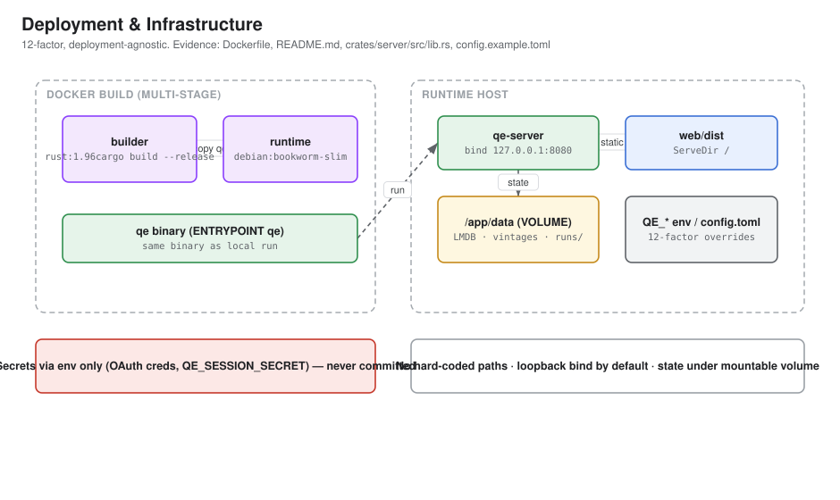
- Builder —
rust:1.96,cargo build --release --locked -p qe-cli. - Runtime —
debian:bookworm-slim; copiesqe;ENTRYPOINT ["qe"],CMD ["train", "--config", "config.toml"]; state underVOLUME ["/app/data"]. - Server + SPA — build the SPA to
web/dist, runqe-serverwithQE_SERVER_STATIC_DIR=web/dist; servesweb/distat/and the API at/api; binds loopback by default.
No IaC (Terraform/CDK/Pulumi/Kubernetes/Helm) and no PaaS config (vercel/fly/render) were detected — deployment target beyond Docker: not detected in repository.
12CI/CD and Observability
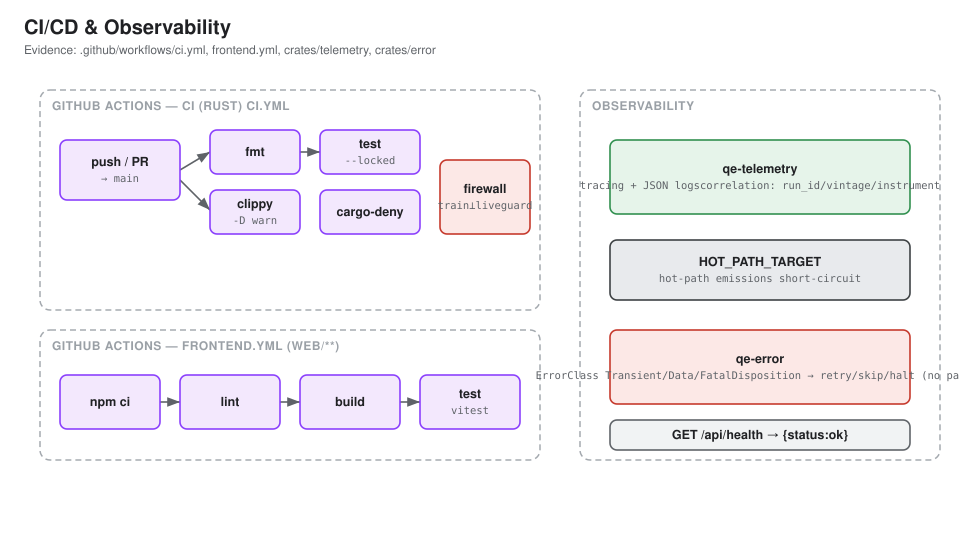
ci.yml(Rust):fmt,clippy -D warnings,test --locked(runs the firewall + hot-path lint tests),cargo-deny check. Toolchain pinned by SHA.frontend.yml(web, path-filtered):npm ci → lint → build → test(vitest) on Node 20.- No CD / deploy workflow detected.
- Observability:
qe-telemetrystructuredtracing+ correlation fields (run_id/vintage_hash/instrument/window_id);HOT_PATH_TARGETshort-circuits under prod filters;qe-errormaps to retry/skip/halt (no panic). Liveness:GET /api/health. No external APM/error-tracking SaaS detected.
13Background Jobs, Webhooks & Async Events
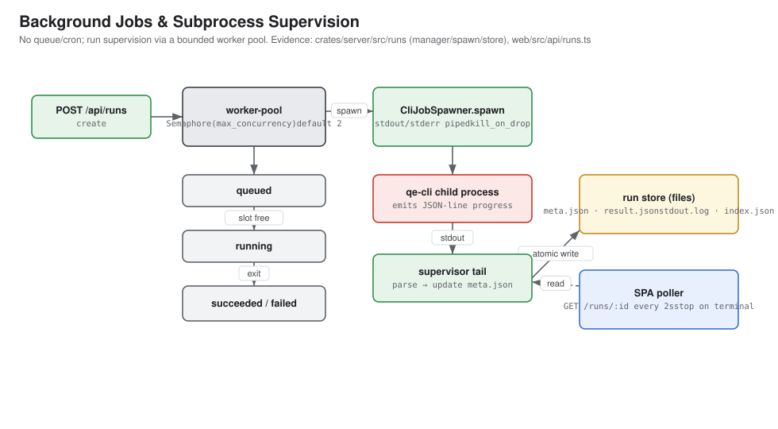
- Worker pool — a tokio semaphore bounds concurrent subprocesses (
QE_SERVER_MAX_CONCURRENCY, default 2); excess stayqueued. - Spawn —
CliJobSpawnerrunsqe-cliwith piped stdout/stderr andkill_on_drop(no runaway job on shutdown). - Supervision — tails JSON-line progress, atomically rewrites
meta.json; recordssucceeded/failed+ exit code + error tail. - Client — SPA polls
GET /api/runs/:idevery 2 s, stops on terminal (no server push). No retry/DLQ — a failed run is terminal.
14Security Boundaries and Data Protection
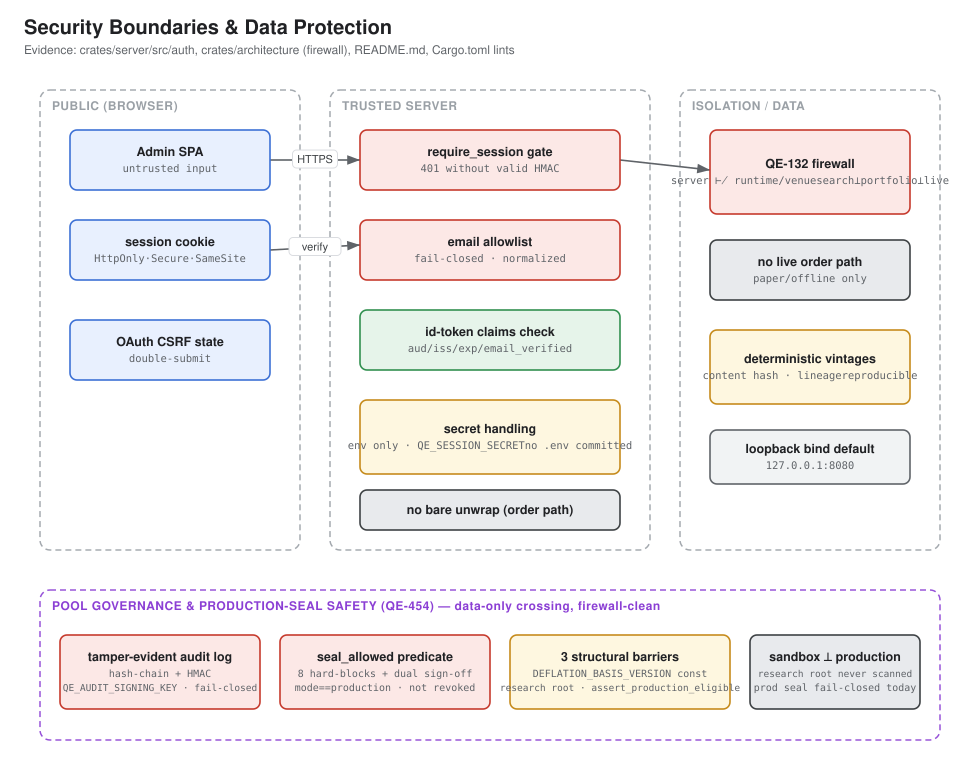
- Public boundary — session cookie
HttpOnly; Secure; SameSite=Lax; OAuth CSRFstatedouble-submit. - Server boundary —
require_sessiongates the protected/apisubtree (constant-time verify,401without a valid HMAC); unknown/api/*→404. - AuthZ — fail-closed email allowlist + strict claim checks.
- Secrets — env only; no committed secrets; missing session secret degrades to random ephemeral key.
- QE-132 firewall —
tests/firewall.rsfails CI on forbidden edges:qe-wfo ⊬ {ensemble, runtime, venue},qe-ensemble ⊬ {wfo, runtime, venue},qe-server ⊬ {runtime, venue}— the server can never link the live path. - No live order path; workspace lints
unsafe_code = deny+clippy::unwrap_used = denykeep the order path panic-free. - Network — loopback bind by default; TLS/CORS/rate-limiting not detected in code (fronting proxy assumed).
15Architectural Risks and Recommendations
| Risk | Evidence | Recommendation | Priority |
|---|---|---|---|
| No TLS / CORS / rate-limiting in server code | crates/server/src/lib.rs | Require a TLS proxy; add rate-limiting + CORS if bound non-loopback | High |
| Ephemeral session secret fallback | auth/mod.rs from_env | Refuse to boot on non-loopback bind + missing QE_SESSION_SECRET | High |
ingest job is a scaffold only | crates/cli/src/main.rs | Track the "real ingestion is future work" seam; document sample-store reliance | Medium |
| No CD / deploy automation | .github/workflows/* | Add a release workflow once a target platform is chosen | Medium |
| No environment separation config | One config.example.toml | Add per-profile overlays or a documented per-env matrix | Medium |
| Run status via polling only | web/src/api/runs.ts | Consider SSE/websocket if concurrent viewers grow (fine at current scale) | Low |
| LMDB single-open contract is a footgun | crates/storage/src/store.rs | Keep the Arc single-open discipline; add a debug double-open guard | Low |
| No at-rest encryption for stored data | crates/storage, vintages (JSON) | Rely on volume-level encryption on shared infra; document the assumption | Low |